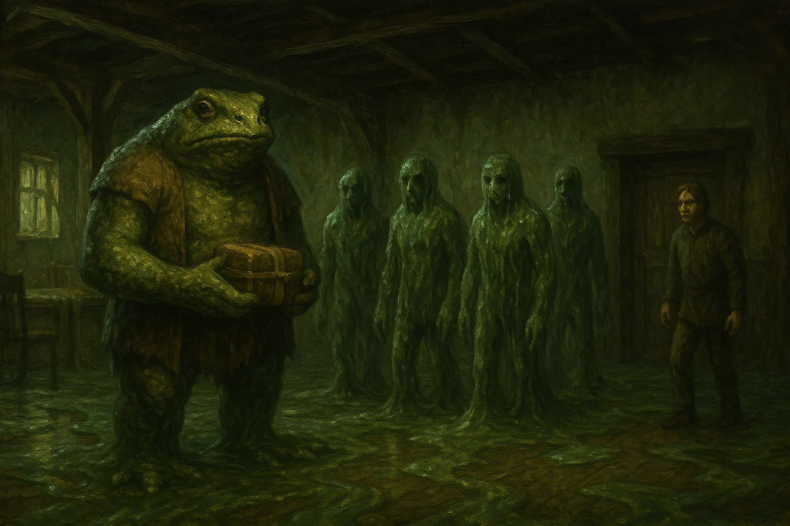

Chapter 4: True Form
Mattington Shattered


Mattington Shattered
15048.11.17
「歡迎來到我的遊戲間」霍布粗獷的聲音從裡頭傳了出來。冒險者們想了想，便決定走了進去，找了離門口較近的椅子坐了下來，只有伊努決定留在外頭，門從後面關了起來。酒館內，冒險者們看著霍布化身成了他真正的模樣—一隻比他們都還要高且壯碩的蛙人—露出了十分開心的表情，手上把玩著包著布的魔法盒子，向冒險者們感謝將盒子送到了他的手裡。他的手下們，則是魚人般的生物，身上全是黏液。同時，霍布將一旁的喬納森釋放，表示自己遵守了當時交易的承諾。喬納森心驚膽跳的跑到了冒險者身邊，也坐了下來。
在華生將圖伊特搬到他們的桌子上後，圖伊特逐漸甦醒。恍恍惚惚，他感受到自己剛才做了一個夢。夢中，自己穿梭在一片極其潮濕的雨林中，漫無目的。潮濕黏膩的環境，似乎竄出了各種他認不得的生物……
霍布邀約冒險者們跟他一起建造個偉大的裝置，並表示自己會每天付50枚金幣薪水給他們。在霍布的大方之下，蘇加魯、帕拉丁和圖伊特都表現出了願意配合的態度。華生的態度卻讓霍布感到不妥，因此受到了霍布用他長長舌頭的挑釁，霍布並吩咐他的兩個手下將華生制伏，晚點會好好調教調教。
蘇加魯好奇的問著霍布他們究竟要建造什麼，霍布則賣著關子，表示這是個偉大的東西，他們只要聽好施令，該做什麼就做什麼。一名魚人同時也吐出了他長長的舌頭，朝著帕拉丁挑釁。對於這群生物感到好奇的圖伊特試著用他理解他們所用的語言溝通，詢問了這隻剛才對帕拉丁挑釁的魚人，他們是從哪裡來的？那名魚人表示他們是從深淵來的，不過他們只是跟隨著指示來到這裡，中間怎麼穿越過來，他們已經不記得了。他們認知霍布也是深淵來的生物，但是和他們階級不同，他們不敢違抗霍布，但同時霍布對他們也很好，因此沒有對抗他的理由。另外，拉索斯教似乎是和霍布簽訂了契約，他們屬於合作的關係，因此這群魚人也可以說是被拉索斯教給聘用。
沒有進到酒館內的伊努繞到了酒館後門，發現後門沒有上鎖，於是繞了進去。後門的倉庫沒有像前門那種黏膩感，隱約也能聽見前門酒館內討論的聲音。不確定該怎麼辦，伊努於是繞到後門外等待。
霍布表示是時候該動工了，用他們的語言和他的手下們喊了幾句後，便轉頭要開鎖，卻發現鎖打不開，於是要蘇加魯來開。經過了幾番爭辯後，蘇加魯終於轉頭將鎖打開，霍布便讓他的黨羽們出發。
走出酒館的後門，霍布和他的黨羽們都化回了人形。隊伍後方，一些霍布的手下從倉庫搬了裝有黑色石頭的精緻盒子，便跟上隊伍。最終，一群人走到了當初霍布將喬納森關押的那個房子內。後方的伊努也跟上了隊伍，來到了房子前。
根據霍布的指示，幾名手下如工頭般指揮起了其他工人以及剛加入的冒險者們，從房子內搬出了木材，開始加工。同時，兩名押解著華生的惡徒將他帶到了房子內右側的房間，開始用他聽不懂的語言以及長長的舌頭恫嚇著他。來到附近的伊努好奇地詢問其中一名工頭他們在做什麼，於是工頭便將他帶到霍布身邊。霍布看著人形的伊努，冷笑著歡迎「小狗」的出現，接著他便讓其中一名工頭將伊努帶去看看他的「姊姊」，華生。
看見了伊努出現在眼前，房間內正在被恫嚇的華生將門關上，背後長出了翅膀，吸引了關押他的惡徒們的興趣。然而，他利用短暫的時間，飛了起來，從上方的窗戶鑽了出去，躲開了發現他的蹤跡並試圖用木條朝他丟擲的工人，並趕緊飛到附近的高樓（其實只有二樓）樓頂躲藏並休息。
看見飛走的華生，幾名工人試圖追上去。蘇加魯也看見了，大聲呼喊自己也要追上去，幫霍布把他重要的資產追回來。霍布感到些許懷疑，讓自己的手下先將蘇加魯趕回工地。不過蘇加魯馬上從旁邊繞開，繼續朝著他感覺華生飛的方向跑去。兩名工頭跟在他後面跑，霍布見狀，也跟了上來，試圖追上蘇加魯。
發現霍布已經不在附近，圖伊特和帕拉丁透過心靈感應討論，判斷現在似乎是個可以將現場的工人們除掉的好時機。討論好之後，圖伊特也將他們的計劃告訴了伊努，接著圖伊特便發出了刺耳的叫聲，幾名工人看起來受到了很大的影響。在帕拉丁和伊努的配合下，全場的工人與工頭們全都倒地。為了確保安全，圖伊特和帕拉丁將看起來比較強壯的工頭們通通補了幾刀，而伊努則先跑進了房子內左側的房間，將門關上，暫時傳送回YHWH的身邊小小休息。
蘇加魯一路跑，跑了好一陣子，發現霍布與他的黨羽再也追不上了，才開始放慢速度，而此刻，他也跨出了瑟巴諾的鎮門口。遠方的霍布從遠處看著蘇加魯，手上拋著他的魔法盒子，然後便轉頭離去。
眼看工地一代的威脅都沒有了，疲憊的圖伊特和帕拉丁將死透的工頭們搬了進屋子內，進到左側的房間內，用屍體將門口堵住，做了簡單的休息，直到伊努突然憑空出現在他們的眼前。三人經過討論後，決定往瑟巴諾鎮門口的方向前進。
隔了好一陣子，另一棟建築物屋頂上的華生，看見霍布繞回了他的酒館去，另外四名他的工人們則靠在街道旁喘氣歇息。不久後，華生看見了圖伊特、帕拉丁，和伊努等夥伴出現在了他的視野範圍內。同時蘇加魯也出現在了接到了另一側。華生看見圖伊特和伊努接手將四名惡徒中的兩名快速擊倒，另外兩名則倉皇的逃亡，卻被堵在路口的蘇加魯嚇著。隨著冒險者們的集結，最終只剩下一名活口。
在華生從屋頂飛翔下來，降落在僅剩的惡徒面前，表示自己想探聽些消息後，面色慘白的惡徒表示自己願意配合，但是得離酒館越遠越好。話音剛落，他便倒在了地上，嘴角滲出血色，沒有了呼吸。冒險者們看著他的身體，和其他惡徒一樣，漸漸地、漸漸地化為水窪。然後左方傳來熟悉的粗獷的聲音，邀請著他們進到酒館內。
像是受到控制一般，伊努、圖伊特、蘇加魯和華生沒有遲疑的向著酒館走去，感到不對勁的帕拉丁為了夥伴們的安全，也只能跟上了。進到酒館內，木製的桌椅都不見了，整間酒館像是淹滿了黏稠的古怪液體，有著苔蘚的色調。帕拉丁身後的門也被關上了。房子內，只剩下霍布把玩著包住的魔法盒子，以及眼神空洞的四名冒險者和帕拉丁。
「是時候看看你們真實的模樣了。」霍布微微打開被包緊的魔法盒子，將一隻手伸入，挖出了一坨黏液，讓它滑落在黏稠的地板上。那坨黏液從地板上緩緩升起，漸漸地化成了兩個人型……
帕拉丁遲疑著怎麼做。他試著喊醒逐漸被黏液覆蓋的夥伴們，甚至敲打他們，卻苦無成效，就連對著霍布攻擊也沒有任何效果。夥伴們試著掙脫，試著保持清醒，卻逐漸、逐漸失去了意識……
地上冒出的兩坨黏液逐漸化成人型，然後又冒出了兩坨。人型黏液緩緩移向冒險者們，然後開始變形，成為冒險者們的模樣。此刻霍布身邊也出現了一個和他一模一樣的化形，帕拉丁甚至無法分辨出何者才是真正的霍布。蘇加魯、圖伊特，以及華生紛紛在黏液中崩塌、倒下，而被身旁的黏液複製品取代他們的身份，伊努則在失去意識的前一刻傳送回到他的主人YHWH的身邊，以逃過這場災厄。然後門外傳來了敲門聲。
「帕拉丁，我們趕快逃出去吧！」帕拉丁腦中響起熟悉的圖伊特的呼喚聲，看著持續傳來敲門聲的酒館門口，對面是敵是友？眼看四名「夥伴」緩步走向門口，帕拉丁趕緊跑向門邊，用力扯開被黏液覆蓋住的木門。
此刻帕拉丁眼前的景象令他感到詫異。瑟巴諾一片屍海，道路上除了斷垣殘壁外，就是屍橫遍野，唯一活生生的人，便是在他面前衣服破爛的安娜。帕拉丁感到困惑，想向安娜詢問發生了什麼事，但安娜大步走入酒館內，詢問著帕拉丁魔法盒子的去處。帕拉丁這才發現霍布與他的分身早已消失了蹤影。
在帕拉丁的帶領下，兩人找遍了整個遊戲間，也從後門繞出去，走到之前霍布的工地去。在房子內，他們發現了縮在角落抖動不已的喬納森，甚至連話都講不清楚了。帕拉丁試著詢問發生什麼事情，喬納森只顫抖著他的手，指向帕拉丁的身後已經向外走去的安娜。帕拉丁試著追問，卻得不到他想要的解答。然而，他卻看見喬納森突然抓住了自己的心臟，然後瞬間癱軟。回頭，帕拉丁看見回到自己身後的安娜緩緩放下自己的手。
「走吧，我還需要你的幫助。」
「那……對了，鎮長呢？」
「那個人已經沒有利用價值了。」
安娜領著帕拉丁，沿路走回霍布的遊戲間。此時黏液化成的冒險夥伴們早已失去蹤影。帕拉丁看著安娜從腰際取出了幾罐玻璃小瓶，逡巡了幾番後，蹲了下來，將地上的黏液徒手挖起，裝入玻璃瓶內。來來回回幾次，四瓶玻璃瓶分別在不同角落裝滿，然後他便起身，從大門口走了出去。帕拉丁對於安娜的行為感到疑惑，但也知道自己就算詢問，也無法從這人口中得到什麼有用的資訊，所以也就靜默了。
跟著安娜，兩人走回了佈滿傭人屍體的鎮長家。安娜在客廳正中央用力踩了幾下，「砰」，一扇通往地下的門，就這樣被開啟了。
15048.11.17
「Welcome to my party house.」Hobb A rough voice came from inside. The adventurers thought for a while, then decided to go in and found a chair closer to the door and sat down. Only Inu decided to stay outside and the door was closed from behind. In the tavern, the adventurers watched Hobb transform into his true appearance - a frogman taller and stronger than them all - with a very happy expression, playing with the magic box wrapped in cloth, and thanking the adventurers for delivering the box to him. His men were fish-men-like creatures, their bodies covered in mucus. At the same time, Hobb released Jonathan on the side, indicating that he had complied with the commitment of the transaction at that time. Jonathan ran to the adventurer in fear and sat down.
After Watson moved Tweeter to their table, Tweeter gradually woke up. In a daze, he felt that he had just had a dream. In the dream, I was walking aimlessly through an extremely humid rainforest. Various creatures that he could not recognize seemed to emerge from the damp and sticky environment...
Hobb invited adventurers to build a great device with him, and said that he would pay them 50 gold coins every day. Under the generosity of Hobb, Sugalu, Paladin and Tweeter all showed their willingness to cooperate. However, Watson's attitude made Hobb feel inappropriate, so he was provoked by Hobb with his long tongue. Hobb also ordered his two men to subdue Watson and would train him later.
Sugalu curiously asked Hobb what exactly they were going to build. Hobb was nonchalant, saying that this was a great thing. As long as they listened to the orders, they would do whatever they had to do. A fishman also stuck out his long tongue and challenged Paladin. Tweeter, who was curious about this group of creatures, tried to communicate in the language he understood them to use, and asked the fishman who had just provoked Paladin, where did they come from? The fishman said that they came from the Deep, but they just followed the instructions and came here. They no longer remember how they traveled through the time. They recognize that Hobb is also a creature from the Deep, but unlike their class, they dare not disobey Hobb, but at the same time, Hobb is also very good to them, so there is no reason to fight against him. In addition, the Rathos Cult seems to have signed a contract with Hobb. They are in a cooperative relationship, so this group of fishmen can also be said to be hired by the Rathos Cult.
Inu, who did not enter the tavern, went around to the back door of the tavern and found that the back door was not locked, so he went around. The warehouse at the back door doesn't feel as sticky as the front door, and you can vaguely hear the discussion in the tavern at the front door. Unsure of what to do, Inu went around to the back door and waited.
Hobb said it was time to start construction. After shouting a few words with his men in their language, he turned to open the lock, but found that the lock could not be opened, so he asked Sugalu to open it. After several arguments, Sugalu finally turned around and opened the lock, and Hobb asked his henchmen to set off.
Out of the back door of the tavern, Hobb and his henchmen returned to their human form. Behind the team, some of Hobb's men moved delicate boxes containing black stones from the warehouse and followed the team. Eventually, a group of people walked to the house where Hobb had imprisoned Jonathan. Inu in the rear also followed the team and came to the house.
According to Hobb's instructions, several of his subordinates directed other workers and the newly joined adventurers like foremen, moved the wood out of the house, and began processing. At the same time, the two thugs who were escorting Watson took him to the room on the right side of the house and began to threaten him with a language he did not understand and a long tongue. Inu, who came nearby, curiously asked one of the foremen what they were doing, so the foreman took him to Hobb. Hobb looked at the humanoid Inu, sneered and welcomed the appearance of the "puppy", and then asked one of the foremen to take Inu to see his "sister", Watson.
I saw Inu appearing in front of me. Watson, who was being intimidated in the room, closed the door and sprouted wings from his back, attracting the interest of the villains who imprisoned him. However, he took advantage of the short time to fly up and out of the window above, avoiding the workers who discovered his trace and tried to throw wooden bars at him, and quickly flew to the roof of a nearby tall building (actually only the second floor) to hide and rest.
Seeing Watson flying away, several workers tried to catch up. Sugalu also saw it and shouted loudly that he would catch up and help Hobb recover his important assets. Hobb felt a little suspicious and asked his men to drive Sugalu back to the construction site first. However, Sugalu immediately went around and continued running in the direction where he felt Watson was flying. Two foremen ran after him, Hobb saw this and followed him, trying to catch up with Sugalu.
Discovering that Hobb is no longer nearby, Tweeter and Paladin discuss through telepathy and decide that now seems to be a good time to get rid of the workers on site. After the discussion, Tweeter also told Inu their plan, and then Tweeter made a shrill cry, and several workers seemed to be greatly affected. With the cooperation of Paladin and Inu, all the workers and foremen fell to the ground. In order to ensure safety, Tweeter and Paladin gave the stronger-looking foremen a few cuts. Inu first ran into the room on the left side of the house, closed the door, and temporarily teleported back to YHWH for a short rest.
Sugalu ran all the way for a long time, and found that Hobb and his followers could no longer catch up, so he started to slow down. At this moment, he also crossed the gate of Sebano's town. Hobb in the distance looked at Sugalu from a distance, throwing his magic box in his hand, and then turned away.
Seeing that the threat from the construction site generation was gone, the exhausted Tweeter and Paladin moved the dead foreman into the house, entered the room on the left, blocked the door with the corpse, and took a simple rest until Inu suddenly appeared in front of them out of thin air. After discussion, the three decided to head towards the entrance of Sebano town.
After a long time, Watson on the roof of another building saw Hobb walking back to his tavern, while the other four of his workers were leaning on the street to catch their breath. Soon after, Watson saw Tweeter, Paladin, and Inu and other partners appearing in his field of vision. At the same time, Sugalu also appeared on the other side. Watson saw Tweeter and Inu take over and knock down two of the four villains quickly, while the other two fled in a hurry, but were frightened by Sugalu who was blocking the intersection. As the adventurers gathered, only one person was left alive.
After Watson flew down from the roof and landed in front of the remaining villains, expressing that he wanted to get some information, the pale-faced villain said that he was willing to cooperate, but he had to stay as far away from the tavern as possible. As soon as he finished speaking, he fell to the ground, blood oozed from the corners of his mouth, and he was no longer breathing. The adventurers watched as his body, like other villains, slowly and gradually turned into a puddle. Then a familiar rough voice came from the left, inviting them into the tavern.
As if under control, Inu, Tweeter, Sugalu and Watson walked towards the tavern without hesitation. Paladin, who felt something was wrong, had no choice but to follow for the safety of his friends. Entering the tavern, all the wooden tables and chairs were gone. The entire tavern seemed to be filled with a sticky, weird liquid with a mossy color. Paladin The door behind him was also closed. In the house, only Hobb was left playing with the wrapped magic box, as well as the four adventurers and Paladin with empty eyes.
"It’s time to see your true form." Hobb slightly opened the tightly wrapped magic box, put a hand in, dug out a lump of slime, and let it fall on the sticky floor. The slime slowly rose from the floor and gradually transformed into two human figures...
Paladin hesitated on what to do. He tried to wake up his friends who were gradually covered in mucus, and even hit them, but to no avail. Even attacking Hobb had no effect. The partners tried to break free and stay awake, but gradually, gradually lost consciousness...
The two lumps of mucus that emerged from the ground gradually turned into human shapes, and then two more lumps emerged. The humanoid slime slowly moved towards the adventurers, and then began to transform into the appearance of the adventurers. At this moment, an avatar exactly like him appeared next to Hobb. Paladin could not even tell which one was the real Hobb. Sugalu, Tweeter, and Watson collapsed and fell in the slime one after another, and their identities were replaced by the slime replicas around them. Inu teleported back to his master YHWH the moment before losing consciousness to escape this disaster. Then there was a knock on the door.
"Paladin, let's escape quickly!" Paladin heard the familiar call of Tweeter in his mind. He looked at the door of the tavern where knocks continued to come. Is the opposite side a friend or foe? Seeing the four "partners" slowly walking toward the door, Paladin quickly ran to the door and forcefully opened the wooden door covered in mucus.
At this moment, the scene in front of Paladin surprised him. Sebano was a sea of corpses. Apart from broken walls, there were corpses everywhere on the road. The only living person was Anna, whose clothes were in tatters in front of him. Paladin is confused and wants to ask Anna what happened, but Anna strides into the tavern and asks Paladin where the magic box is. Paladin then discovered that Hobb and his clone had already disappeared.
Under the leadership of Paladin, the two searched the entire Party House and went around the back door to the previous construction site of Hobb. Inside the house, they found Jonathan huddled in a corner, shaking and unable to even speak clearly. Paladin tried to ask what happened, but Jonathan only shook his hand and pointed at Anna who was already walking out behind Paladin. Paladin tried to ask, but couldn't get the answer he wanted. However, he saw Jonathan suddenly grab his heart and then collapse instantly. Looking back, Paladin saw Anna coming back behind him and slowly put down his hand.
"Let's go, I still need your help."
"Then...by the way, where is the mayor?"
"That person has no use value anymore."
Anna led Paladin and walked back to Hobb’s Party House along the road. At this time, the adventure partners turned into slime had already disappeared. Paladin watched Anna take out several glass vials from his waist. After wandering around for a few times, he squatted down, dug up the mucus on the ground with his bare hands, and put it into the glass bottles. After going back and forth several times, four glass bottles were filled in different corners, and then he stood up and walked out of the gate. Paladin was confused about Anna's behavior, but knew that even if he asked, he would not be able to get any useful information from this person, so he remained silent.
Following Anna, the two walked back to the mayor's house, which was littered with servants' corpses. Anna stepped hard in the center of the living room a few times, and "bang", a door leading to the underground was opened.